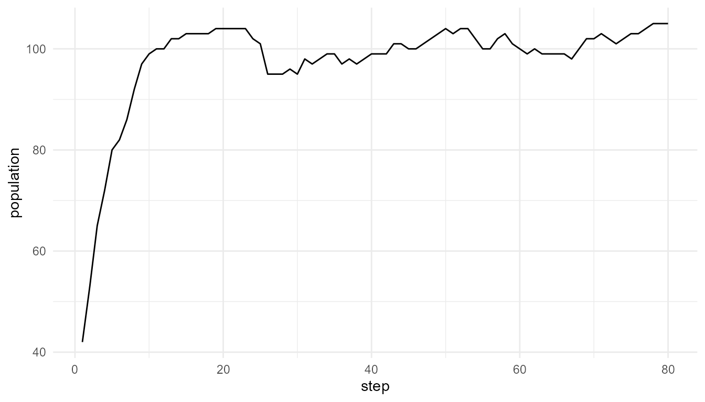
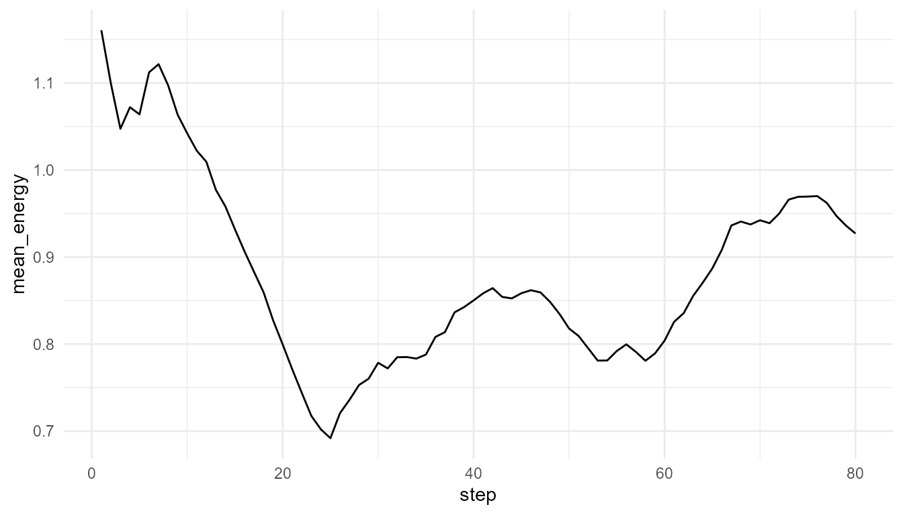

Population Dynamics Tutorial
Source:vignettes/population-dynamics-tutorial.Rmd
population-dynamics-tutorial.RmdPurpose
This tutorial introduces simulate_population_dynamics().
Population dynamics are important in artificial life because individual
reproduction and death can produce population-level patterns over
time.
In this tutorial, you will run a population simulation, plot population size, compare resource levels, and interpret output carefully.
Basic simulation
pop <- simulate_population_dynamics(
initial_population = 40,
steps = 80,
carrying_capacity = 120,
resource_level = 1.0,
seed = 8
)
head(pop$summary)
#> step population mean_energy mean_efficiency trait_sd
#> 1 1 42 1.160712 0.5068640 0.1209392
#> 2 2 53 1.099529 0.5258282 0.1190282
#> 3 3 65 1.047416 0.5246034 0.1127533
#> 4 4 72 1.072170 0.5319397 0.1153829
#> 5 5 80 1.064019 0.5375708 0.1177924
#> 6 6 82 1.112263 0.5398442 0.1175034Plot population over time
plot_alife_sim(
pop$summary,
x = "step",
y = "population",
type = "line"
)
Plot mean energy
plot_alife_sim(
pop$summary,
x = "step",
y = "mean_energy",
type = "line"
)
Compare resource levels
low_resource <- simulate_population_dynamics(
initial_population = 40,
steps = 80,
carrying_capacity = 120,
resource_level = 0.5,
seed = 8
)
high_resource <- simulate_population_dynamics(
initial_population = 40,
steps = 80,
carrying_capacity = 120,
resource_level = 1.5,
seed = 8
)
data.frame(
scenario = c("low resource", "high resource"),
final_population = c(tail(low_resource$summary$population, 1), tail(high_resource$summary$population, 1)),
final_mean_energy = c(tail(low_resource$summary$mean_energy, 1), tail(high_resource$summary$mean_energy, 1))
)
#> scenario final_population final_mean_energy
#> 1 low resource 81 0.9149638
#> 2 high resource 111 0.9135949Measure trait change
measure_life_like_complexity(
pop$agents,
trait_col = "efficiency",
time_col = "step"
)
#> n unique_values entropy mean sd temporal_variability
#> 1 7822 55 2.763371 0.6067738 0.1110611 0.04800829
#> mean_abs_change
#> 1 0.002284226Compare carrying capacity
small_capacity <- simulate_population_dynamics(
initial_population = 40,
steps = 80,
carrying_capacity = 60,
resource_level = 1.0,
seed = 8
)
large_capacity <- simulate_population_dynamics(
initial_population = 40,
steps = 80,
carrying_capacity = 160,
resource_level = 1.0,
seed = 8
)
data.frame(
scenario = c("small capacity", "large capacity"),
final_population = c(tail(small_capacity$summary$population, 1), tail(large_capacity$summary$population, 1)),
max_population = c(max(small_capacity$summary$population), max(large_capacity$summary$population))
)
#> scenario final_population max_population
#> 1 small capacity 49 52
#> 2 large capacity 137 139Interpretation
Population dynamics emerge from repeated individual-level processes: energy gain, energy cost, death, reproduction, inheritance, mutation, and selection.
The population curve is not imposed directly. It arises from the simulation rules.